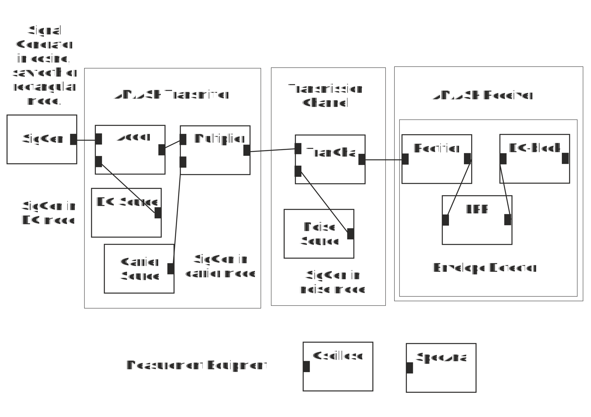

Detection of full carrier AM is very simple and based on so called Envelope Detector. Envelope is a curve that follows carrier waveform peaks. Make up an AM/ASK system shown in the figure below.
AM/ASK system and its Envelope Detector
Set DC source to 1V, carrier waveform to 1 V amplitude and Noise Source to 0 V amplitude.
1. Set signal generator at the transmitter’s input to cosine waveform and 5Hz frequency. Look at the modulated carrier waveform at the output of the AM-Modulator. Its envelope follows
2. Look at the received and detected signal at the output of the receiver’s LPF, i.e. at the output of envelope detector, with oscilloscope. Detected signal at the output of LPF follows
3. Set signal generator at the transmitter’s input to sawtooth waveform. Look at the modulated carrier waveform at the output of the AM-Modulator. Its envelope follows:
4. Look at the received and detected signal at the output of the receiver’s LPF, i.e. at the output of envelope detector. Output of LPF follows
5. Look at the output of the rectifier inside envelope detector. It consists of
6. Compare input and output waveforms of LPF. LPF of the envelope detector
7. CD-block of the envelope detector
When you have answered all the questions you can submit your answers.
You passed test. You may now start Exercise 2: Impact of LPF on Signal Shape and Spectrum
Test failed. Consider again answers tat are not correct